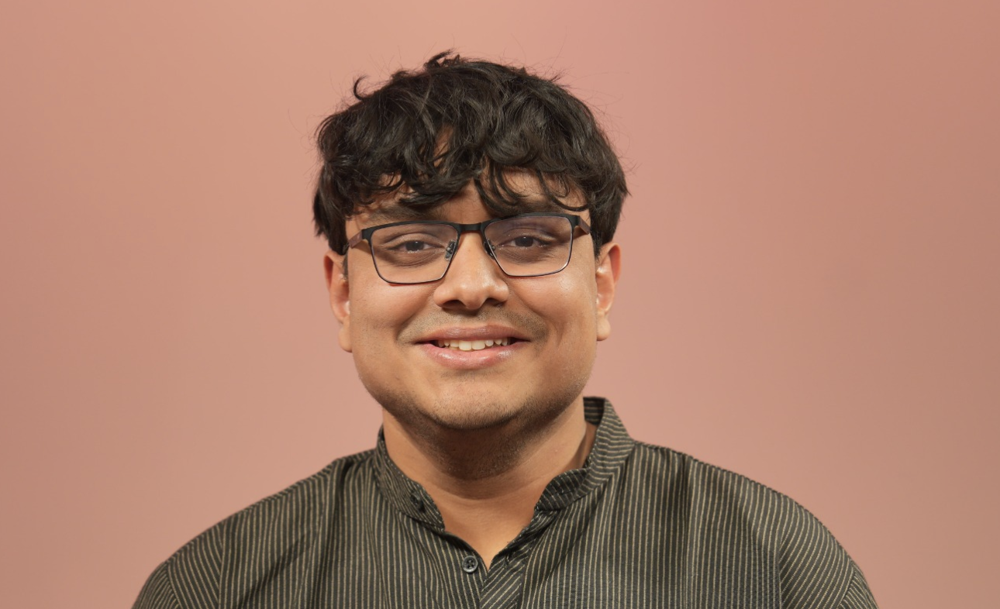
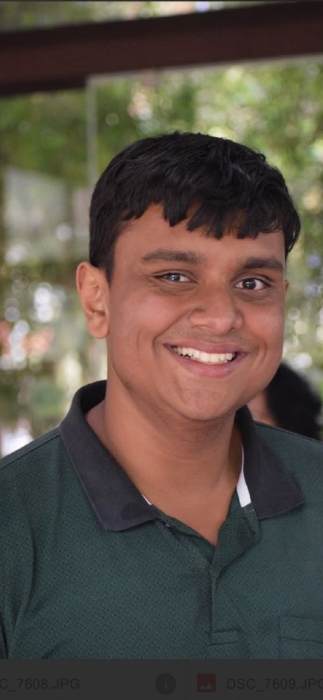

Hardware · Software · Systems
Nikhil Kumar
Computer Engineering Student at Iowa State University
I am a Computer Engineering student at Iowa State University pursuing a minor in Data Science. My interests include computer architecture, embedded systems, RTL design, formal verification, and software development. Through research, internships, and academic projects, I have worked on processor design, programming languages, wireless research infrastructure, and production web applications.

About Me
I enjoy understanding how systems work across both hardware and software. My experience ranges from designing RISC-V processors in VHDL to developing full-stack applications and investigating methods for validating SystemVerilog assertions. I value practical problem-solving, careful testing, and learning new tools through hands-on work.

Education
Iowa State University
B.S. in Computer Engineering
Minor in Data Science
- Expected graduation
- May 2027
- GPA
- 3.92 / 4.00
- Planned M.S.
- May 2028